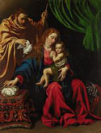

From
the collection

Luis
Tristàn
Holy Family
1613
Oil on canvas overall
H.56 x W.43 in.
The William Hood Dunwoody Fund
Like Caravaggio, Tristàn did not distort or idealize his subjects; rather, he insisted on portraying what was real and believable. The figures in this work look like people who might be encountered in daily life. And the precisely rendered still-life elements (Oriental rug, basket, handkerchief) also contribute to the realistic effect.The Child looks toward us, smiling, and seems to draw us into the world of the picture.
Depictions
of the Virgin nursing the Christ Child were unusual at this period,
having lost favor after 1563, when the Council of Trent prohibited undue
nudity in representations of the saints and Holy Family .